Plotting
Last updated on May 1, 2022
import numpy as np
import pandas as pd
import folium
import geopandas
import contextily
import matplotlib as mpl
import matplotlib.pyplot as plt
import seaborn as sns
from src.import_data import import_data
For the scope of this tutorial we are going to use AirBnb Scraped data for the city of Bologna. The data is freely available at Inside AirBnb: http://insideairbnb.com/get-the-data.html.
A description of all variables in all datasets is avaliable here.
We are going to use 2 datasets:
- listing dataset: contains listing-level information
- pricing dataset: contains pricing data, over time
We import and clean them with a script. If you want more details, have a look at the data exploration and data wrangling sections.
df_listings, df_prices, df = import_data()
Intro
The default library for plotting in python is matplotlib. However, a more modern package that builds on top of it, is seaborn.
We start by telling the notebook to display the plots inline.
%matplotlib inline
Another important configuration is the plot resulution. We set it to retina to have high resolution plots.
%config InlineBackend.figure_format = 'retina'
You can choose set a general theme using plt.style.use(). The list of themes is available here.
plt.style.use('seaborn')
If you want to further customize some aspects of a theme, you can set some global paramters for all plots. You can find a list of all the options here. If you want to customize all plots in a project in the samy way, you can create a filename.mplstyle file and call it at the beginning of each file as plt.style.use('filename.mplstyle').
mpl.rcParams['figure.figsize'] = (10,6)
mpl.rcParams['axes.labelsize'] = 16
mpl.rcParams['axes.titlesize'] = 18
mpl.rcParams['axes.titleweight'] = 'bold'
mpl.rcParams['figure.titlesize'] = 18
mpl.rcParams['figure.titleweight'] = 'bold'
mpl.rcParams['axes.titlepad'] = 20
mpl.rcParams['legend.facecolor'] = 'w'
Distributions
Suppose you have a numerical variable and you want to see how it’s distributed. The best option is to use an histogram. Seaborn function is sns.histplot.
df_listings['log_price'] = np.log(1+df_listings['mean_price'])
sns.histplot(df_listings['log_price'], bins=50)\
.set(title='Distribution of log-prices');
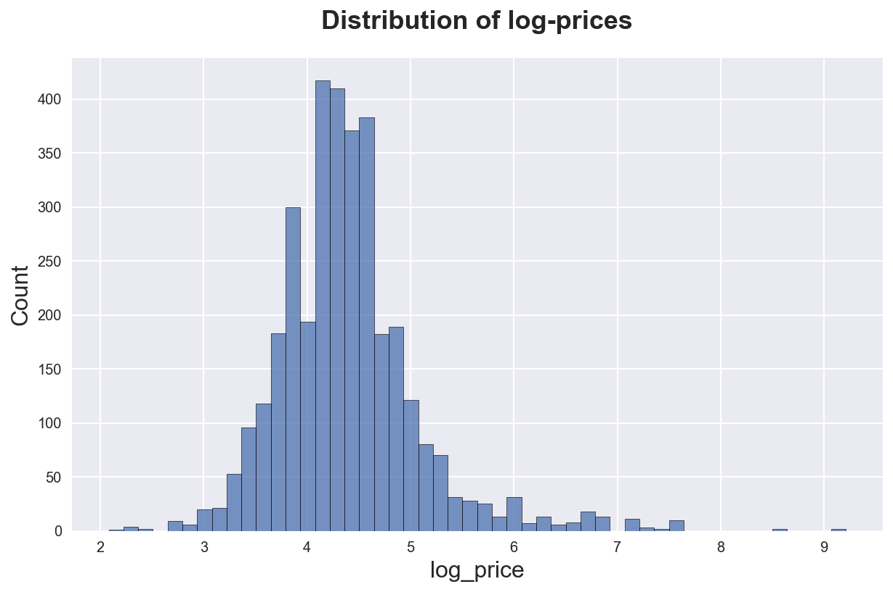
We can add a smooth kernel density approximation with the kde option.
sns.histplot(df_listings['log_price'], bins=50, kde=True)\
.set(title='Distribution of log-prices with density');
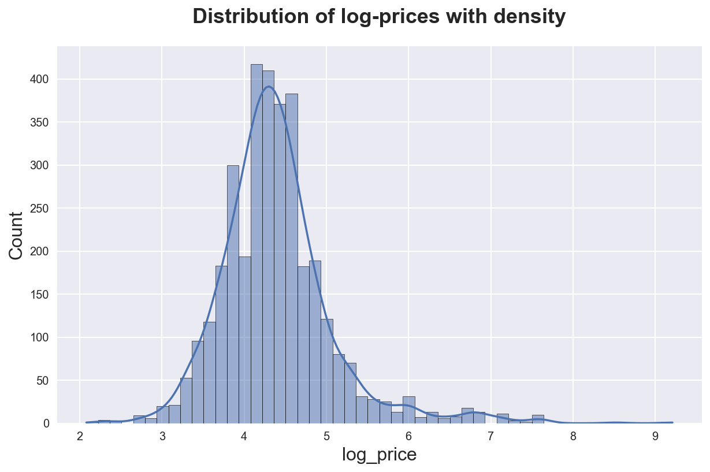
If we have a categorical variable, we might want to plot the distribution of the data across its values. We can use a barplot. Seaborn function is sns.countplot() for count data.
sns.countplot(x="neighborhood", data=df_listings)\
.set(title='Number of observations by neighborhood');
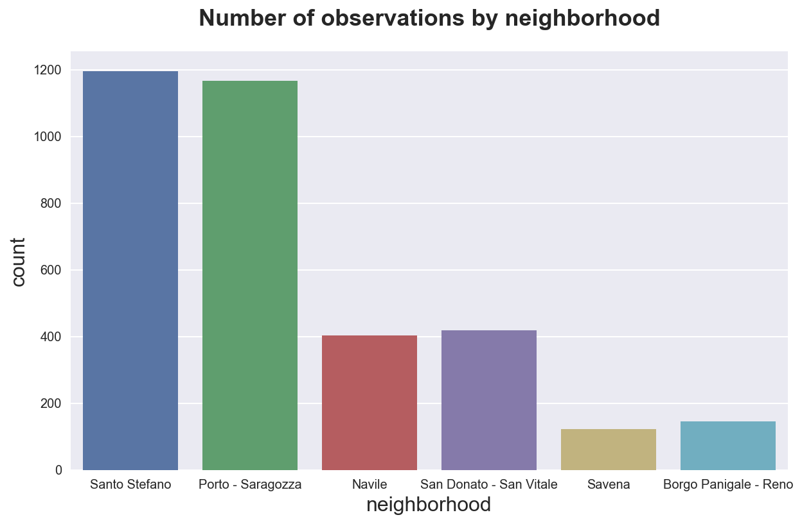
If instead we want to see the distribution of another variable across some group, we can use the sns.barplot() function.
sns.barplot(x="neighborhood", y="mean_price", data=df_listings)\
.set(title='Average price by neighborhood');
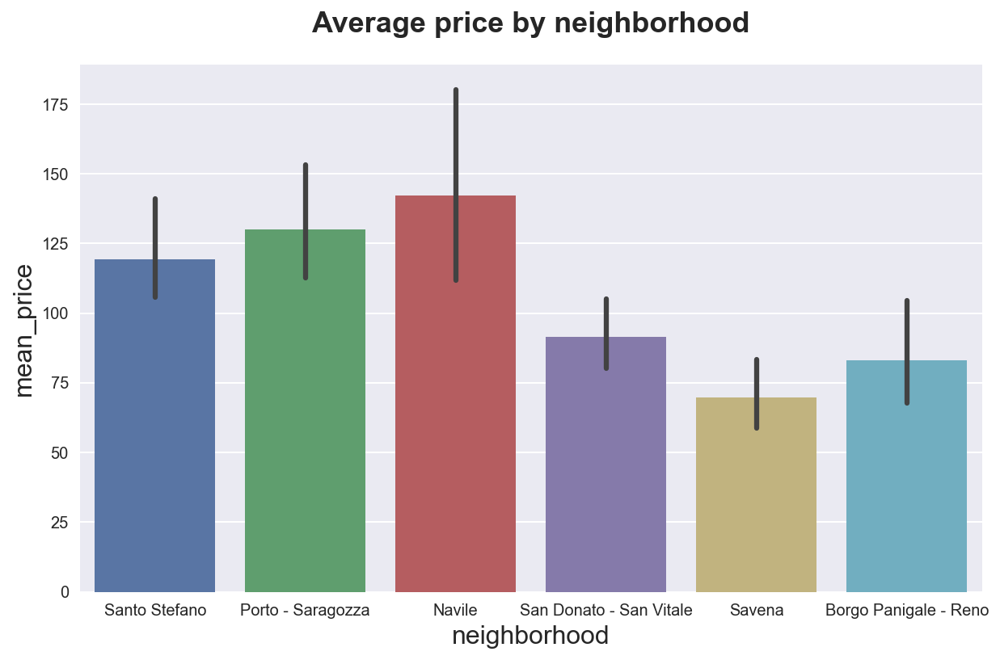
We can also use other metrics besides the mean with the estimator option.
sns.barplot(x="neighborhood", y="mean_price", data=df_listings, estimator=np.median)\
.set(title='Median price by neighborhood');
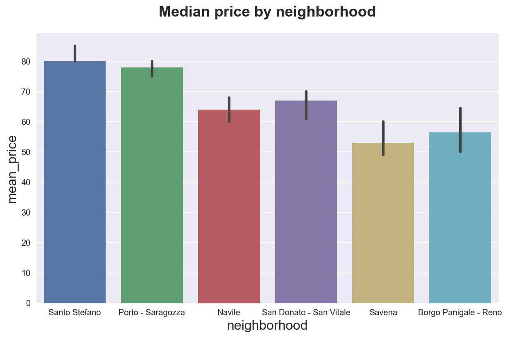
We can also plot the full distribution using, for example boxplots with sns.boxplot(). Boxplots display quartiles and outliers.
sns.boxplot(x="neighborhood", y="log_price", data=df_listings)\
.set(title='Price distribution across neighborhoods');
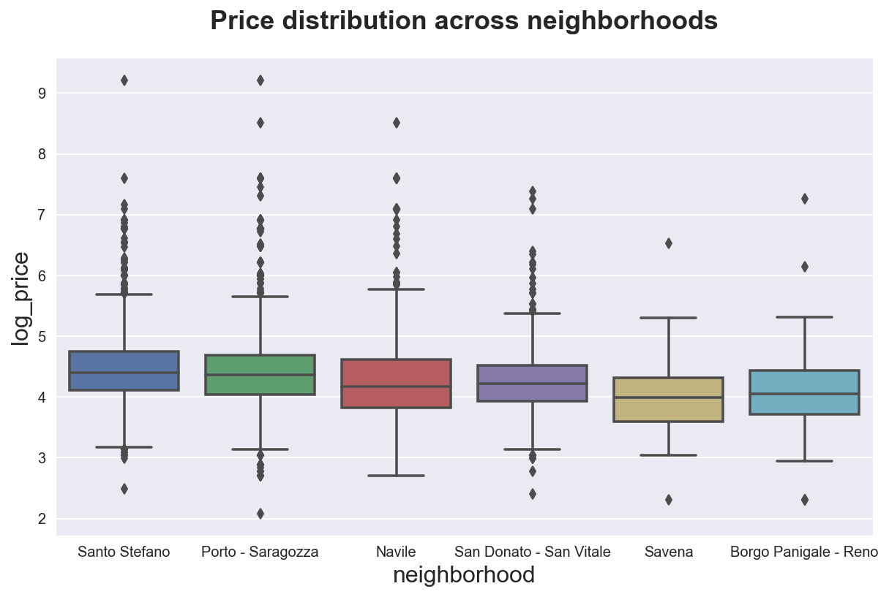
If we want to see the full distribution, we can use the sns.violinplot() function.
sns.violinplot(x="neighborhood", y="log_price", data=df_listings)\
.set(title='Price distribution across neighborhoods');
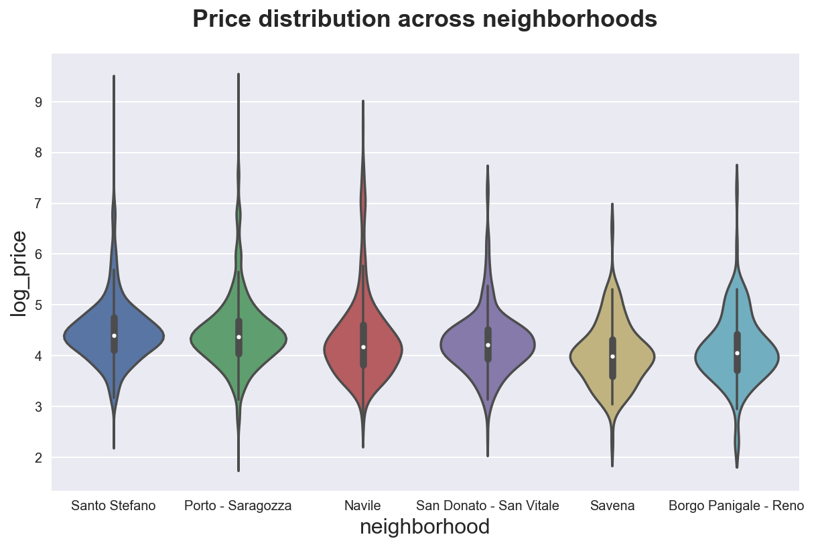
Time Series
If the dataset has a time dimension, we might want to explore how a variable evolves over time. Seaborn function is sns.lineplot(). If the data has multiple observations for each time period, it will also display a 95% confidence interval around the mean.
sns.lineplot(data=df, x='date', y='price')\
.set(title="Price distribution over time");
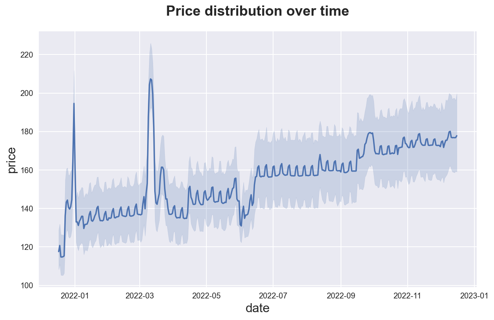
We can do the samy by group, with the hue option. We can suppress confidence intervals setting ci=None (making the code much faster).
sns.lineplot(data=df, x='date', y='price', hue='neighborhood', ci=None)\
.set(title="Price distribution over time");
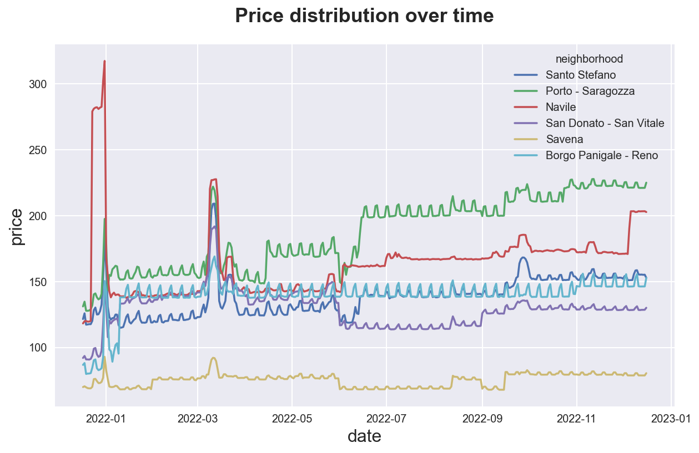
Correlations
df_listings["log_reviews"] = np.log(1 + df_listings["number_of_reviews"])
df_listings["log_rpm"] = np.log(1 + df_listings["reviews_per_month"])
The most intuitive way to plot a correlation between two variables is a scatterplot. Seaborn function is sns.scatterplot()
sns.scatterplot(data=df_listings, x="log_rpm", y="log_price", alpha=0.3)\
.set(title='Prices and Reviews');
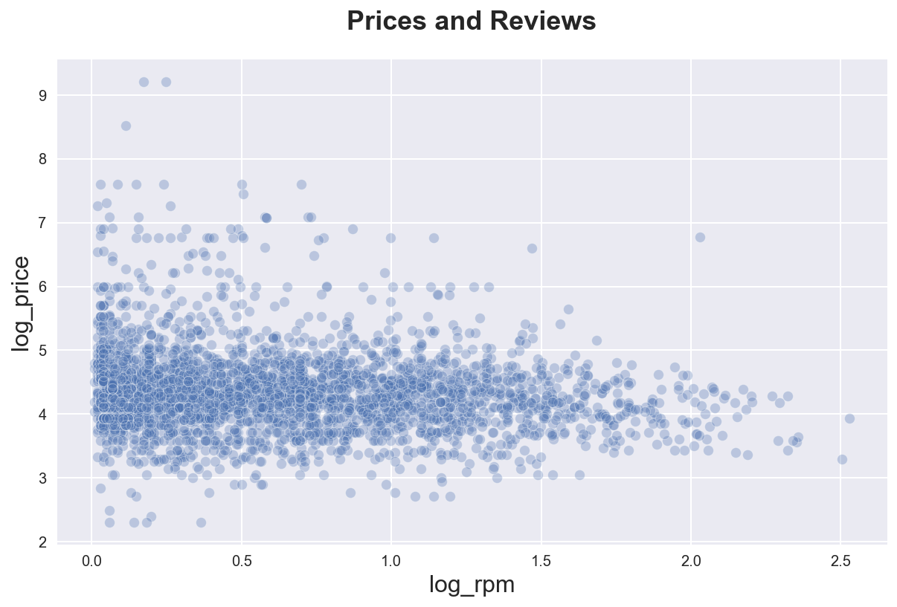
We can highlight the best linear approximation adding a line of fit using sns.regplot().
sns.regplot(x="log_rpm", y="log_price", data=df_listings,
scatter_kws={'alpha':.1},
line_kws={'color':'C1'})\
.set(title='Price and Reviews');
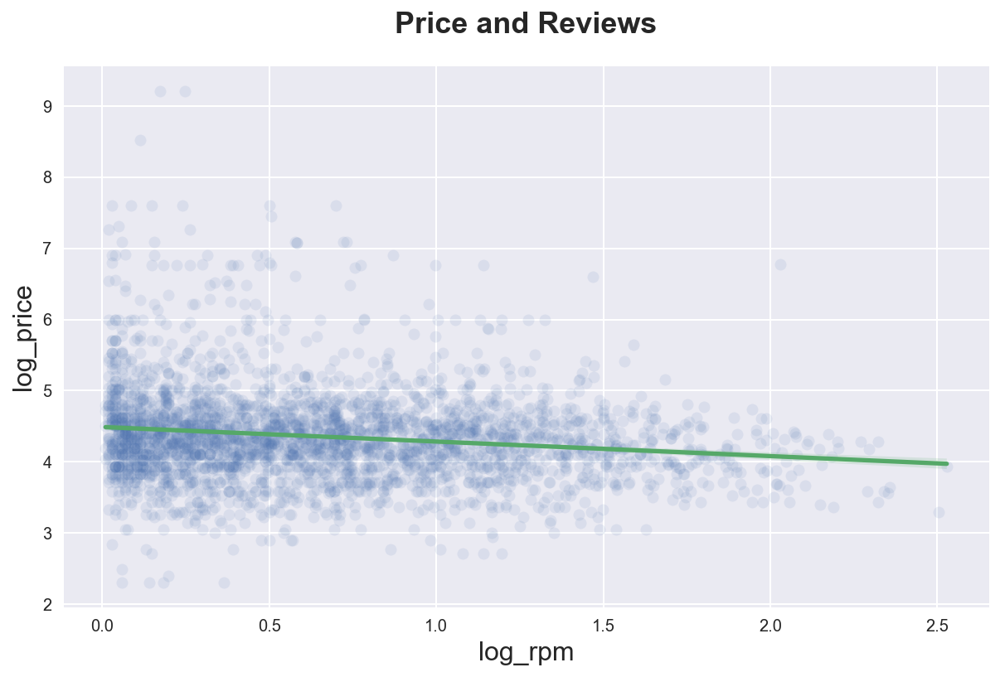
If we want a more flexible representation of the data, we can use the binscatter package. binscatter splits the data into equally sized bins and displays a scatterplot of the averages.
The main difference between a binscatterplot and an histogram is that in a histogram bins have the same width while in a binscatterplot bins have the same number of observations.
An advantage of binscatter is that it makes the nature of the data much more transparent, at the cost of hiding some of the background noise.
import binscatter
# Remove nans
temp = df_listings[["log_rpm", "log_price"]].dropna()
# Binned scatter plot of Wage vs Tenure
fig, ax = plt.subplots()
ax.binscatter(temp["log_rpm"], temp["log_price"]);
ax.set_title('Price and Reviews');
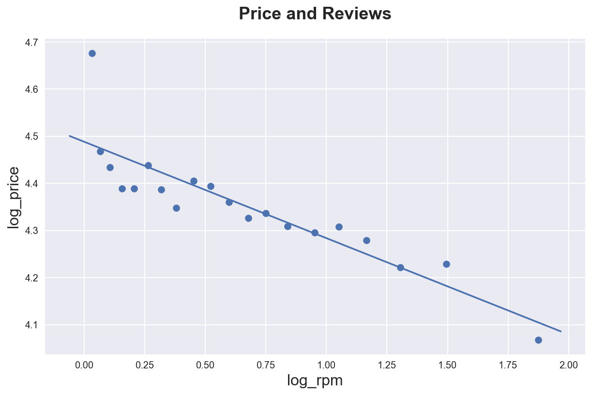
As usual, we can split the data by group with the hue option.
sns.scatterplot(data=df_listings, x="log_rpm", y="log_price",
hue="room_type", alpha=0.3)\
.set(title="Prices and Ratings, by room type");
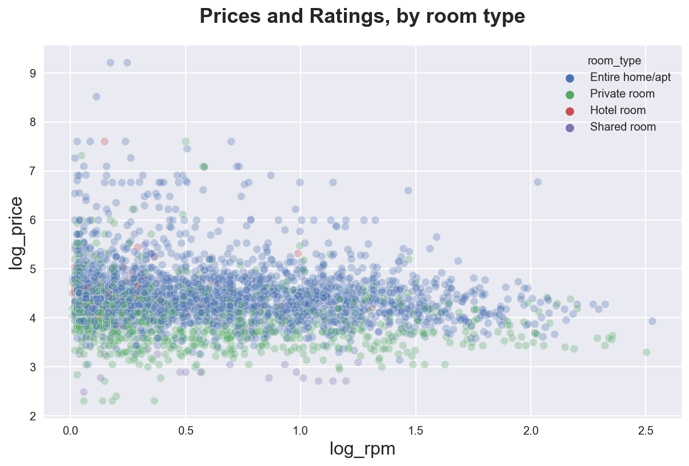
We can also add the marginal distributions using the sns.jointplot() function.
sns.jointplot(data=df_listings, x="log_rpm", y="log_price", kind="hex")\
.fig.suptitle("Prices and Reviews, with marginals")
plt.subplots_adjust(top=0.9);
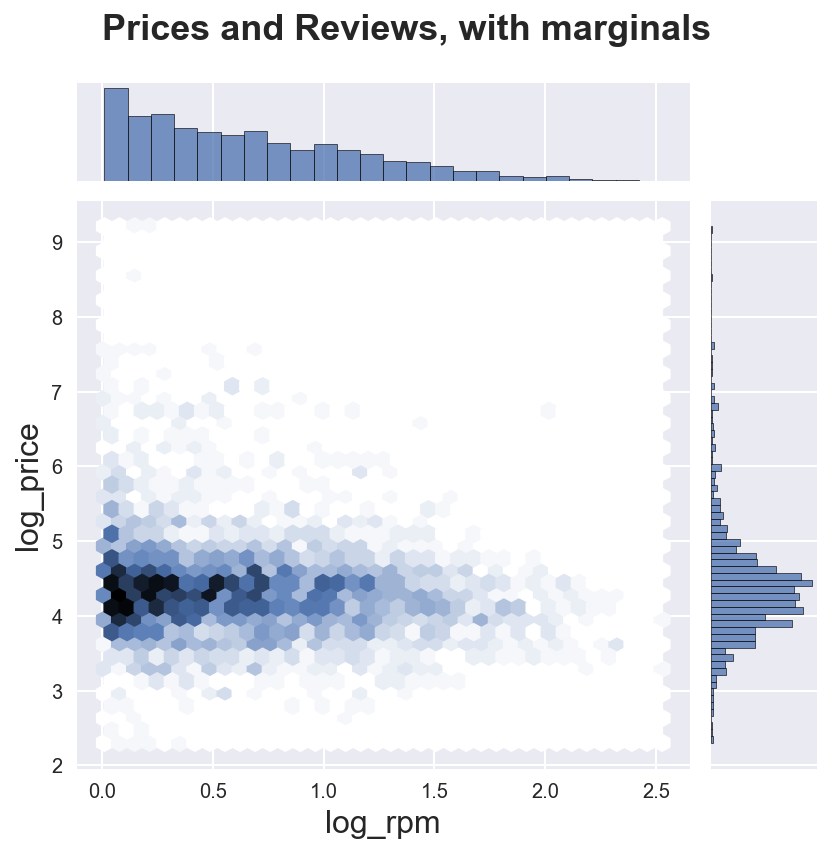
If we want to plot correlations (and marginals) of multiple variables, we can use the sns.pairplot() function.
sns.pairplot(data=df_listings,
vars=["log_rpm", "log_reviews", "log_price"],
plot_kws={'s':2})\
.fig.suptitle("Correlations");
plt.subplots_adjust(top=0.9)
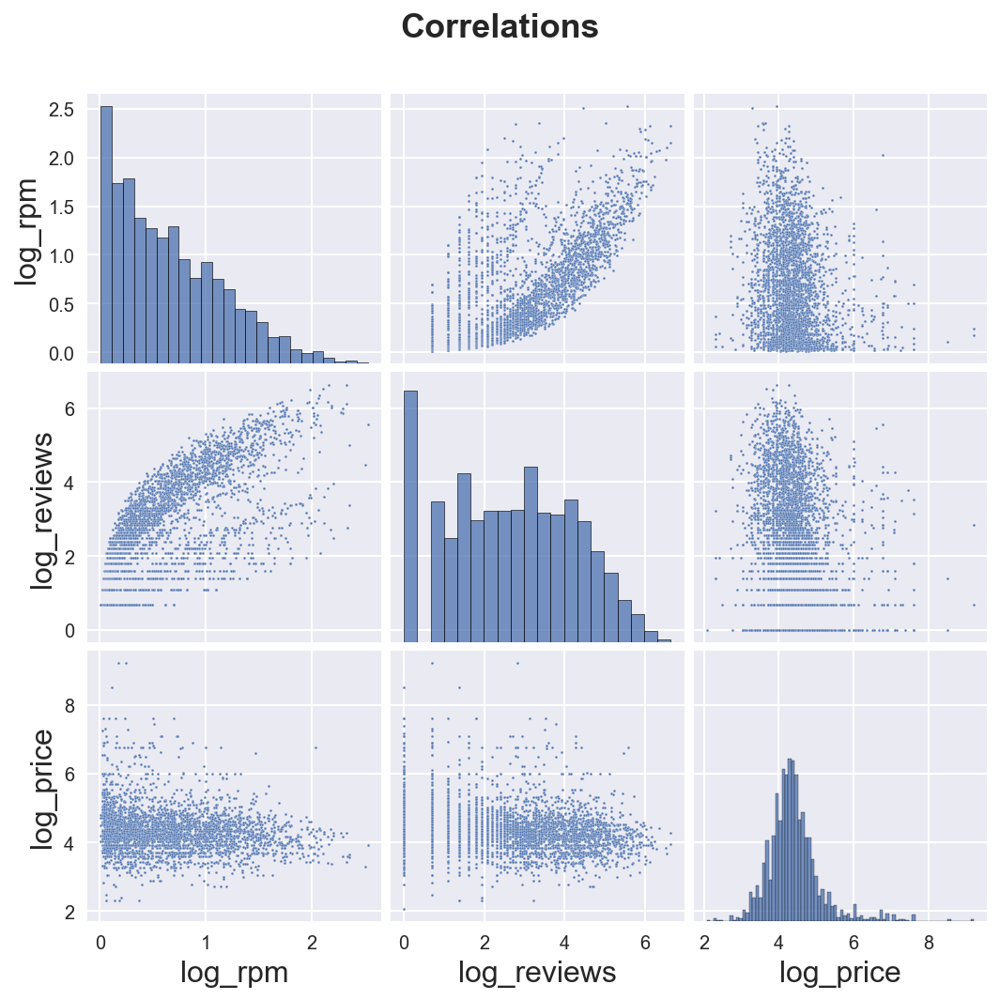
We can distinguish across groups with the hue option.
sns.pairplot(data=df_listings,
vars=["log_rpm", "log_reviews", "log_price"],
hue='room_type',
plot_kws={'s':2})\
.fig.suptitle("Correlations, by room type");
plt.subplots_adjust(top=0.9)
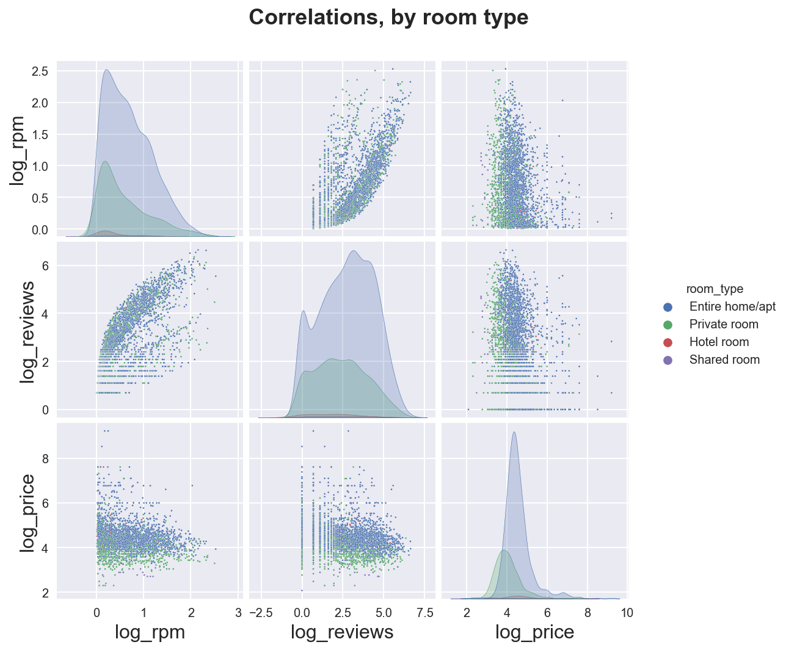
If we want to plot all the correlations in the data, we can use the sns.heatmap() function on top of a correlation matrix generated by .corr().
# Plot
sns.heatmap(df.corr(), vmin=-1, vmax=1, linewidths=.5, cmap="RdBu")\
.set(title="Correlations");
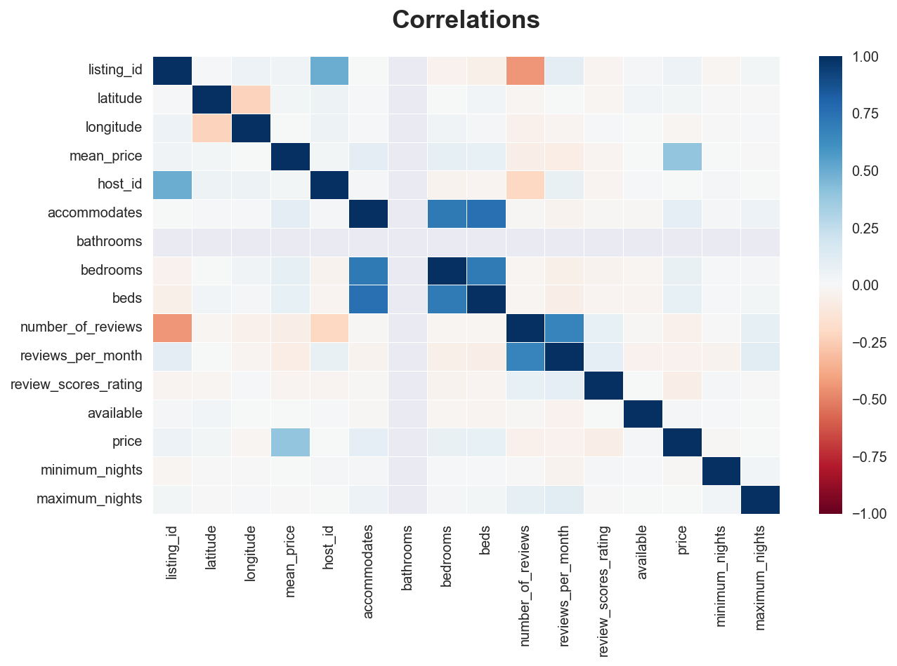
Geographical data
We can in principle plot geographical data as a simple scatterplot.
sns.scatterplot(data=df_listings, x="longitude", y="latitude")\
.set(title='Listing coordinates');
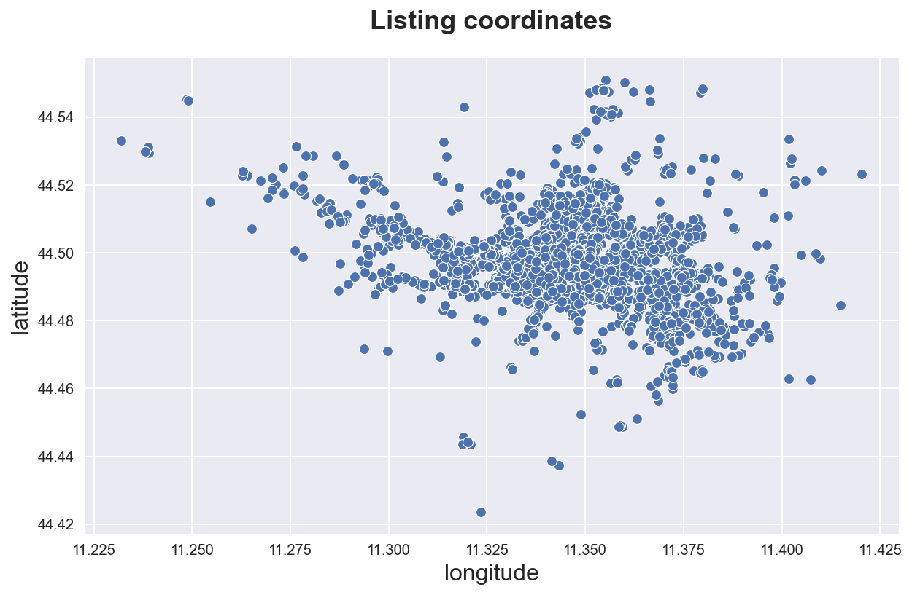
However, we can do better and do the scatterplot over a map layer.
First, we neeed to convert the latitude and longitude variables into coordinates. We use the library geopandas. Note that the original coordinate system is 4326 (3D) and we need to 3857 (2D).
geom = geopandas.points_from_xy(df_listings.longitude, df_listings.latitude)
gdf = geopandas.GeoDataFrame(
df_listings,
geometry=geom,
crs=4326).to_crs(3857)
We import a map of Bologna using the library contextily.
bologna = contextily.Place("Bologna", source=contextily.providers.Stamen.TonerLite)
We are now ready to plot it with the airbnb listings.
ax = bologna.plot()
ax.set_ylim([5530000, 5555000])
gdf.plot(ax=ax, c=df_listings['mean_price'], cmap='viridis', alpha=0.8);
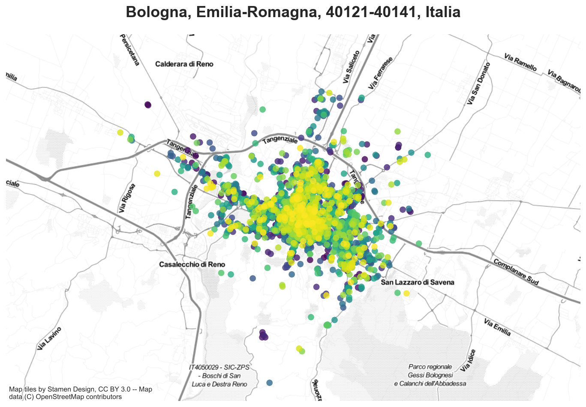